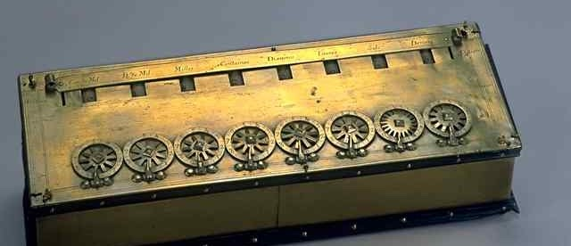
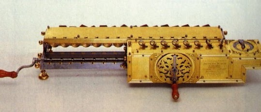
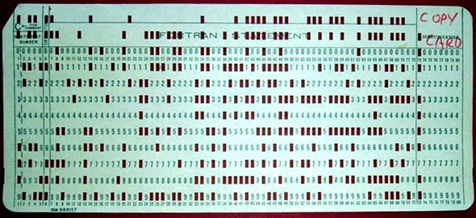
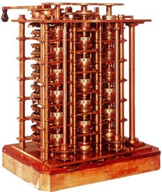
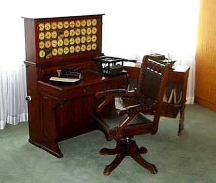
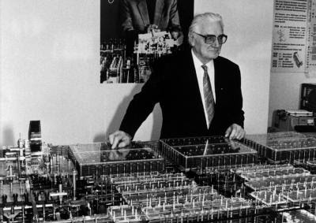
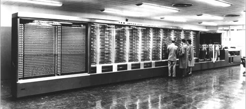

Desde que el Hombre empezó a comerciar y a construir, ha tenido la necesidad de calcular y manejar datos. Nuestros antepasados más remotos contaban con los dedos, es la razón de que nuestro sistema de numeración sea decimal. Actualmente existen calculadoras electrónicas y ordenadores muy potentes para este fin, sin embargo, el invento del ordenador ha sido la consecuencia de un largo camino de descubrimientos que empezó con el primer instrumento de cálculo: el ábaco.
1.1. El ábaco
El uso del ábaco se remonta a los siglos III y IV a. de C. El primer ábaco era muy rudimentario, constaba de una caja de madera llena de arena en la que se hacían surcos en los que se ponían una serie de piedras hasta llegar a 10 y se pasaba al siguiente surco. Más adelante se perfecciono sustituyendo los surcos por varillas con fichas para marcar las centenas, las decenas y las unidades.
El ábaco se sigue usando por sus beneficios en el cálculo mental en la actualidad, sobre todo en los países asiáticos, donde es una asignatura obligatoria desde los primeros cursos hasta los estudios universitarios.
Con un ábaco se pueden realizar sumas, restas, multiplicaciones y divisiones, e incluso operaciones más complejas como raíces cuadradas y potencias.
1.2. Las calculadoras mecánicas
El físico y matemático francés Blas Pascal desarrolló en 1642 un calculador mecánico, primeramente llamado Máquina Aritmética, y después Pascalina, capaz realizar sumas y restas mediante un sistema de ruedas dentadas.
En 1671, el barón alemán Gottfred Leibniz mejoró la máquina de Pascal gracias al descubrimiento del tambor de dientes desiguales, que le permitió construir la Máquina Universal, capaz de realizar sumas, restas, multiplicaciones y divisiones


Pascalina
Máquina Universal de Leibniz
1.2.1. La máquina analítica y la máquina tabuladora
En 1834, el matemático e inventor británico Charles Babbage, inventó la Máquina Analítica que constaba de dos principios fundamentales: de uso general (Programable), y totalmente automática (Autocontrolable). Este invento que fue muy adelantado para la época en que se encontraban podía realizar las siguientes funciones:
Memoria para guardar números. Una unidad aritmético-lógica capaz de realizar distintas operaciones con esos números. Una unidad de control que permitía a la máquina realizar las operaciones en el orden correcto. Dispositivos de entrada para poder introducir en la máquina los datos y las instrucciones. Dispositivos de salida de los resultados obtenidos. Babbage es considerado el padre de la informática, ya que los ordenadores actuales tienen el mismo esquema de funcionamiento que su máquina como ya veremos. La máquina analítica nunca llegó a construirse por los problemas que tuvo Babbage, pero su estructura serviría para el diseño y construcción de máquinas posteriores, como la máquina tabuladora de Hollerith.
En 1890, el estadístico estadounidense Herman Hollerith construyó la Máquina Tabuladora, que servía para leer y organizar los archivos introducidos mediante unas tarjetas de cartón perforadas. Se empleó por primera vez para clasificar el censo de 1890 de Estados Unidos e hizo el trabajo en un tiempo récord (3 años en lugar de los 13 años previstos).

Tarjeta perforada

Máquina Analítica de Babage

Máquina Tabuladora de Hollerith
1.3. Las calculadoras electromecánicas
Gracias a la invención de los relés electromecánicos, se consiguió reducir el número de engranajes de las máquinas calculadoras y aumentar su velocidad y precisión.
En 1938, Konrad Zuze construía una calculadora totalmente mecánica y posteriormente, otra máquina suya, cuya unidad aritmética estaba construida con relés, iba a acreditarse como la primera calculadora programable.

Konrad Zuze con su calculadora programable
El IBM Automatic Sequence Controlled Calculator (ASCC), más conocido como Mark I, fue el primer ordenador electromecánico, construido en la Universidad de Harvard por Howard H. Aiken en 1944, con la subvención de IBM. Tenía 760.000 ruedas y 800 kilómetros de cable y se basaba en la máquina analítica de Charles Babbage.
El computador Mark I empleaba señales electromagnéticas para mover las partes mecánicas. Esta máquina era lenta (de 3 a 5 segundos por cálculo) e inflexible (la secuencia de cálculos no se podía cambiar); pero ejecutaba operaciones matemáticas básicas y cálculos complejos de ecuaciones sobre el movimiento parabólico de proyectiles.
Funcionaba con relés, se programaba con interruptores y leía los datos de cintas de papel perforado.

Ordenador Mark I
T1 - Tarea 1
¡Ya estás listo para hacer la primera tarea! Crea un documento en Google Docs, copia las preguntas y respóndelas. La entrega la realizarás una vez terminadas todas las tareas del tema.
¿Qué cálculos se pueden hacer con un ábaco?
Nombra las 2 calculadoras mecánicas que hemos visto en el tema. ¿Qué operaciones se podían hacer con ellas?. En qué se basaba su funcionamiento.
¿Qué funciones podía realizar la máquina analítica?.
¿Cómo funcionaba la máquina tabuladora y qué funciones hacía?.
¿Qué se consiguió al utilizar relés en las máquinas calculadoras?.
¿Qué características tenía el ordenador Mark I?
Nombra otras máquinas calculadoras mecánicas o electromecánicas que no figuren en este tema (investiga en google o... puedes usar chatgpt).
1.4. Las máquinas electrónicas
En 1904, el británico John Fleming inventó la válvula de vacío, que realizaba la misma operación que un relé, pero sin partes móviles y sin consumir tanta electricidad.
En el año 1945, tan solo un año después de terminar el Mark 1 un equipo de la universidad de Pensilvania diseñó el ENIAC (Electronic Numerical Integrator and calculator), considerado el primer ordenador electrónico. El ENIAC ocupaba todo el primer piso de la universidad de Filadelfia, pesaba 30 toneladas y contenía 18.200 tubos electrónicos que consumían cerca de 200 kilovatios, cuando se ponía en marcha las luces del oeste de la ciudad parpadeaban.
A pesar de los inconvenientes, el ENIAC obtuvo un éxito rotundo gracias a que era 300 veces más rápido de cálculo y era 10 veces más barato.